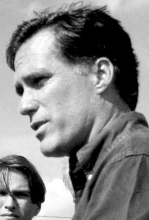

The rumors of Sundance's demise are greatly exaggerated.
The 2nd installment of our series exploring a world where Al Gore became president is forthcoming. As we prepare for its release, feel free to learn more about the candidates and the issues at hand:
Vice President Joe Lieberman has never let himself be defined by party orthodoxy. Does that matter after 8 years of service under a domineering President Gore? Read more
Utah Governor Mitt Romney leads into battle a GOP eager to win the presidency after 16 years. Will his conservative message help him avoid the fate of his father? Read more

Sundance 2008 will offer a wide selection of running mates for you to choose.
Read more about them here
by /u/astrohunch_o, /u/StockdaleforTCT, /u/neo1013, and TedThing
A 21st Century TVTV production